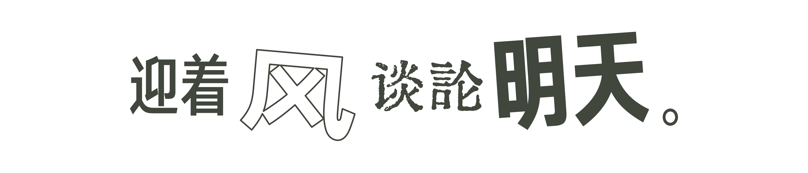
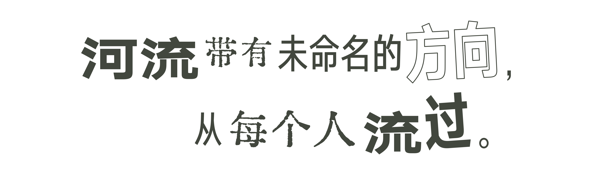

让句子与空间一起成立。
这一轮从韦纳的语言与空间关系出发，统一两句的字形，只在完整语义段之间安排尺度、断句和空白。保留可读性，也给观看留下余地。
2026.11.08 / 字体试排，可切换上一轮比较。
字形可以退后，也可以走到眼前。
“透明”与“不透明”描述注意力停在哪里：越过字形进入想象，或先注意到笔画、轮廓和密度。“空间性”与“物质性”则描述阅读发生的条件：站在哪里、如何移动，文字附着于什么，又随时间发生什么变化。
它们可以同时存在。玻璃透光，不意味着语言的意义就透明；黑字也可以退到语义之后。多数句子让人进入图像，少数节点让文字成为对象，再把人带回诗意。字体不必时时抢先，但每一次显现都应有理由。
这四个角度采用姜昕宇提出的策展分析框架，并非将其概括为韦纳本人的固定理论分类。摄影和诗彼此打开解释，不把诗做成照片的说明。
迎着风谈论明天
“迎着风”与“谈论明天”使用同一字形和共同基线。以完整语义段调整比例，保留顺读的方向；不再逐词更换笔触。



河流带有未命名的方向，
先读“河流带有”，再读完整的“未命名的方向”，最后接向“从每个人流过”。三段共用同一字形，靠断句与空白展开关系。


六处相遇，各有作用
这是对现有展陈的逐处检验，不是六个必须依次完成的站点。前段玻璃保留伏笔，观众可以通过回望重新连起诗句。
02横亘：先遇见，再回望
先感到字形占据的横亘，再透过玻璃看到前后景，回望时重读我与他们之间。形体与意义轮换成为重点。
保留用户指定的前段位置及已认可的空心字。阅读完整句子需要回到A侧正面；背面的镜字不作为新的全文。
03脚下的河流，墙上的图像
04文字与影像共用玻璃
05此刻的我，过去的他们
06抬头与低头之间
这次重新学习的重点
把差异放在关系里。 参考照片中，横梁的先后位置参与了句子的阅读。UCCA对韦纳的介绍也强调：他的表达经过长期提炼，以有限的字族和色彩形成丰富变化。UCCA展览介绍
观众的阅读参与作品。 MoMA将其语言作品解释为每次安装都重新成立的雕塑，并强调读者的作用。对本展的启发，是通过走动和回望重新理解“我”“他们”“以后”的位置；这是一种策展转译，不是对韦纳观念的照搬。MoMA / MOVED FROM UP FRONT
门头、海报和语言作品需要分别判断。 UCCA导览明确区分了韦纳的海报设计与语言雕塑。上一轮把混排的表现力放到了句内；这一轮以完整语义段为单位，缩减特效，把字样放回行走尺度检验。UCCA导览
两句统一使用用户字库的汉仪旗黑X4 Medium真实字形，无字面挤压、伪粗或逐字旋转。现有“横亘”玻璃的轮廓关系、Growing Again的消退、低位“更远的浪”的印刷笔触，仍保留各自与材料及位置的联系。
韦纳对字体的选择也有明确立场，并非一般意义的“无衬线都一样”。本轮借鉴选择与组织的方法，不将现用中文字体称作他的原字体。艺术家2015年访谈